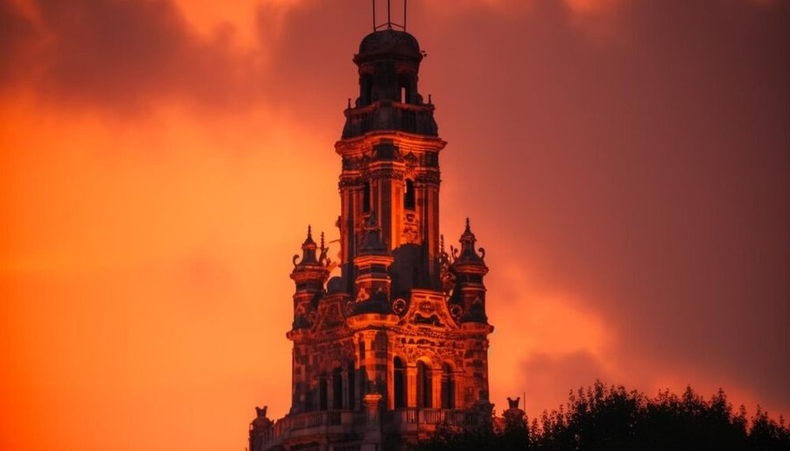

Descoperă orașul Olomouc - O călătorie în Cehia
Olomouc este un oraș plin de istorie și cultură din Cehia, cu numeroase atracții deosebite pentru vizitatori:
-

Ceasul Astronomic din Olomouc - O minunăție tehnică
Ceasul astronomic este o capodoperă de inginerie cu elemente decorative frumoase și funcționalități impresionante.
-

Catedrala din Olomouc - Eleganță sacrală
Catedrala este un simbol al orașului, cu arhitectură gotică și interioare impresionante ce emană spiritualitate.
-

Parcul din Olomouc - Relaxare în natură
Aceste spații verzi oferă o oază de liniște pentru vizitatori, ideală pentru plimbări și relaxare.
-

Muzeul din Olomouc - Cunoaștere și cultură
Muzeul găzduiește colecții variate ce acoperă istoria, arta și cultura regiunii Olomouc.
-

Arcele din Olomouc - Arhitectură unică
Arcele istorice conferă orașului un caracter distinctiv, reprezentând o atracție iconică.
Concluzii
Olomouc impresionează prin patrimoniul său cultural și arhitectural, fiind un oraș ce merită explorat în detaliu.